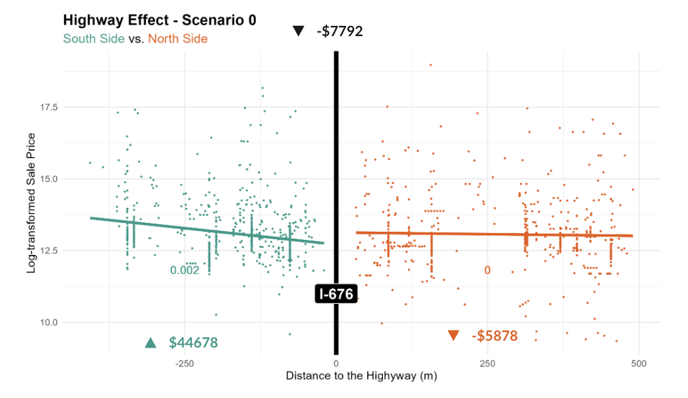

Scenario 0:
Business as Usual
A business-as-usual alternative without the construction of Chinatown Stitch. This alternative is provided here as our reference/control group which will be used to compare results from other scenarios to measure the impacts of the Chinatown Stitch on the local house market.
